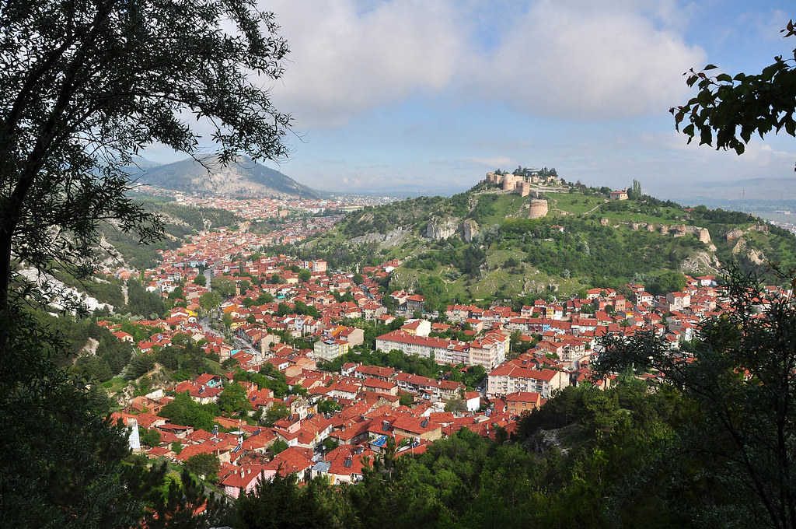

Site'ye Hoşgeldiniz
Kütahya (Latince: Cotyaeum), Ege Bölgesi'nde yer alan Kütahya ilinin merkezi olan şehirdir. Kütahya bölgesi, kuzey ve batıdaki yüksek dağ sırtlarında doruğa ulaşan tarım arazileri ile geniş bir yamaç alanına sahiptir. Kentin Yunanca adı Kotyaion, Roma dönemindeki adı ise Cotyaeum'dur.
